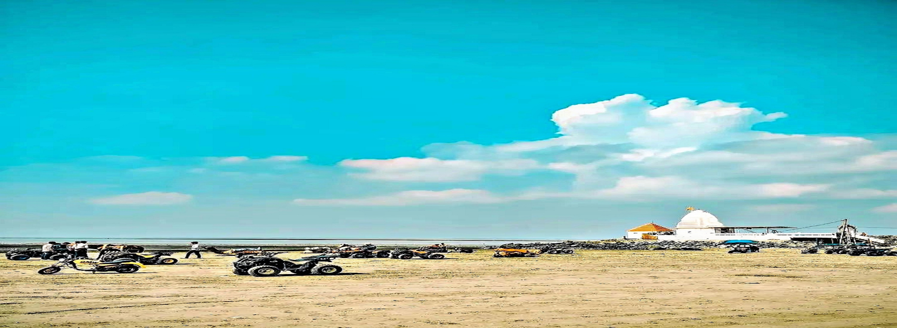
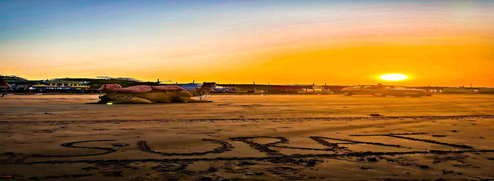
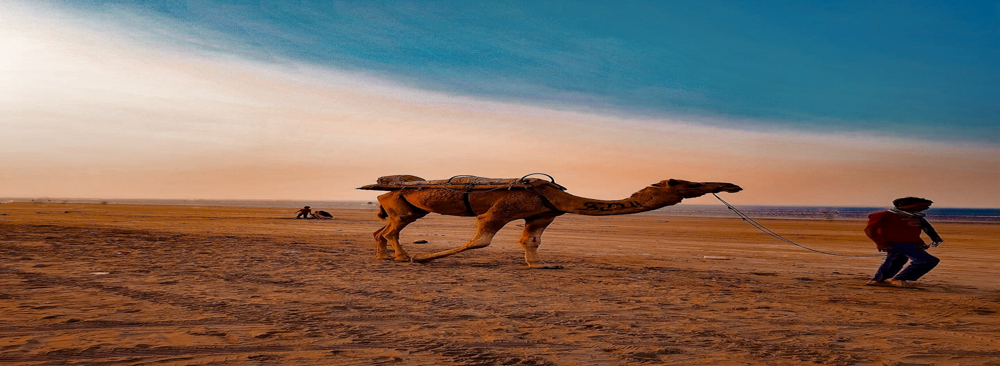
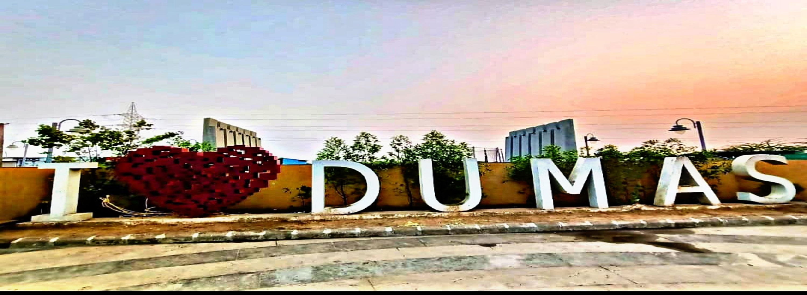

@ Dumas Beach





About Dumas :
Dumas Beach is one of the most popular beaches among the local people. It is located 21 km southwest of Surat city. The beach is one of the picnic spots for a weekend in the city of Surat. It is managed by the Surat Municipal Corporation. You can also eat the traditional food items such as Pav Bhaji, Bhajiya, Gathiya and others. The Dumas Beach is worth seeing during your visit. The beach is one of the most beautiful tourist places in Surat.
A popular tourist attraction as well as a place that is often visited by locals of Surat, the Dumas Beach is a black sand beach. But a quick Google search will tell you that it is also one of the most haunted places in India.
Now is this really true? While there is conflicting information on the net with many saying this is all false, there are people who have experienced the presence of something too.Also Read - Should India Brace For Fourth
COVID Wave - What's The Current Scenario
One of the prime reasons Dumas Beach is considered haunted is because it was an ancient burial ground for Hindus and people believe that spirits still roam there and their whispers can be heard in the quiet of the night. During the day, this beach has a lot going on with several vendors, locals, tourists flocking there and stalls selling food and drinks. But as the night inches closer, you will find fewer people and a feeling of eeriness engulfs the area. Blame it on the rumours or the presence of ghosts, the beach is usually secluded at night as most people refrain from even taking a walk there in the dark. Perhaps the black sand and its history of being a burial ground add to the spookiness of the place.
How to Reach :

BY BUS :
Surat lies 234 km from Ahmedabad, 154 km from Vadodara and 297 km from Mumbai.surat bus stand is near than dumas beach.